John Muir Trail
Cross the High Sierra from Yosemite to the summit of Whitney.
There are 340 km between the two ends of the John Muir Trail, and Mount Whitney is the far one. It starts at Happy Isles. Your ordinary week counts toward all of it: at 5,000 steps a day that's about 13 weeks, with no flights and no leave. Below are the 18 places you pass, each with its photograph and its story.
- 340km end to end
- 18landmarks
- 13 weeksat 5,000 steps a day
- Mount Whitneyfinishes at

The landmarks of John Muir Trail
18 landmarks, in walking order. Each photograph is by the person credited beneath it, used as they licensed it.
-
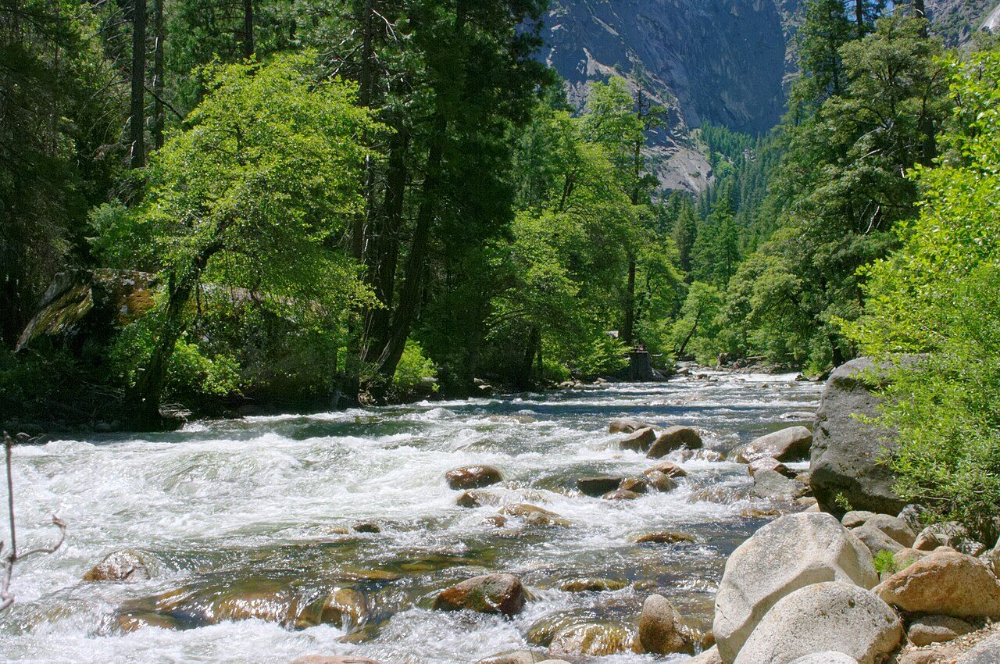
Photo: Emmanuel DYAN from Paris, France · Wikimedia Commons, CC BY 2.0 Happy Isles
The Merced River breaks white over granite steps beside a wooden signboard marking mile zero — Happy Isles, 4,000 feet, on the floor of Yosemite Valley. John Muir tramped this range for decades before his name was hung on the trail leading out of it. Nevada Fall thunders unseen above. Two hundred and eleven miles of Sierra stand between here and Mount Whitney, and the climbing starts at once.
-
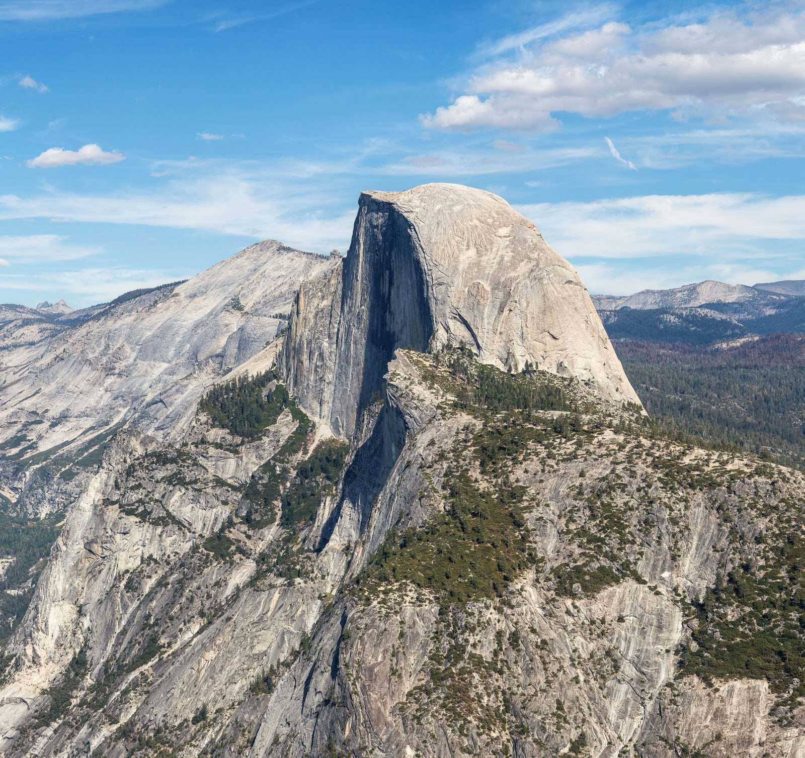
Photo: Thomas Wolf, www.foto-tw.de · Wikipedia, CC BY-SA 3.0 Half Dome
Cables bolted into bare rock haul the final four hundred feet up the rounded back of Half Dome, 8,839 feet, its sheared face falling toward a valley floor nearly a vertical mile below. George Anderson drilled and roped the first ascent in 1875. A short detour off the main trail earns the most famous granite in the Sierra — few walkers can resist it.
-
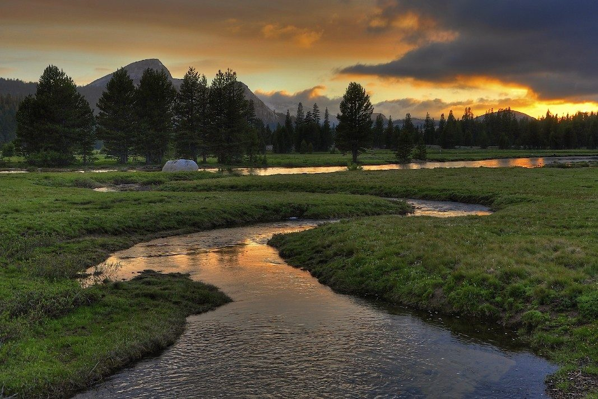
Photo: Steve Dunleavy from Lake Tahoe, NV, United States · Wikipedia, CC BY 2.0 Tuolumne Meadows
The trail spills out of the forest into the largest subalpine meadow in the Sierra — Tuolumne Meadows, 8,600 feet, the Tuolumne River winding lazy through the grass. Pale granite domes ring the flat, and a store and a ranger station make this the first real resupply. Muir came here to think and to argue for its protection. From the far side the route turns south for good.
-
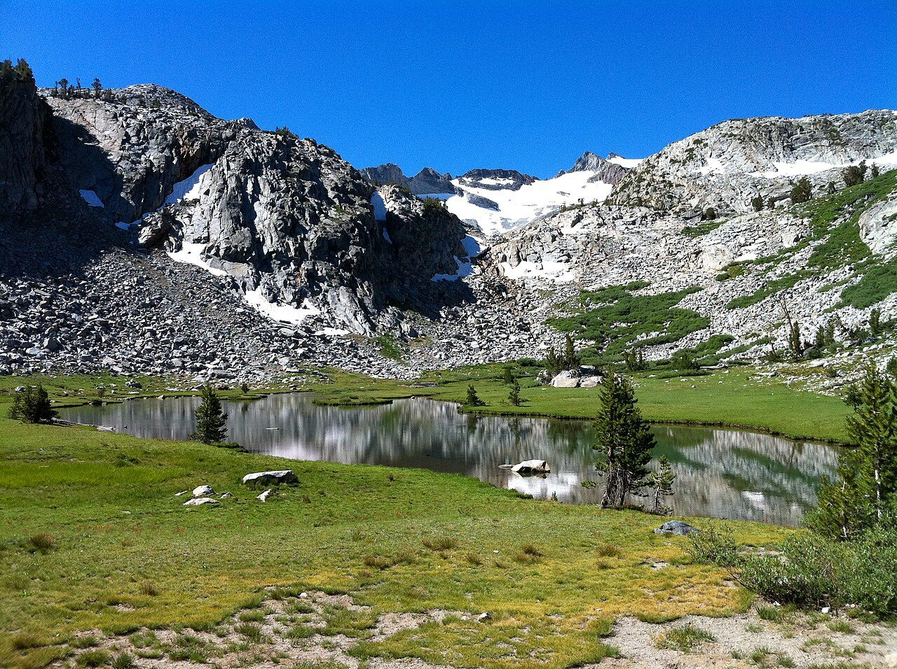
Photo: Peretz Partensky from San Francisco, USA · Wikimedia Commons, CC BY-SA 2.0 Donohue Pass
Switchbacks grind up bare rock to Donohue Pass, 11,073 feet, the boundary where Yosemite ends. It is the first of the high passes, and even the gentlest of them thins the air. Behind, the Lyell Fork drains north; ahead, the Sierra crest marches south in a wall of granite. Marmots whistle from the talus as the Ansel Adams Wilderness opens below.
-
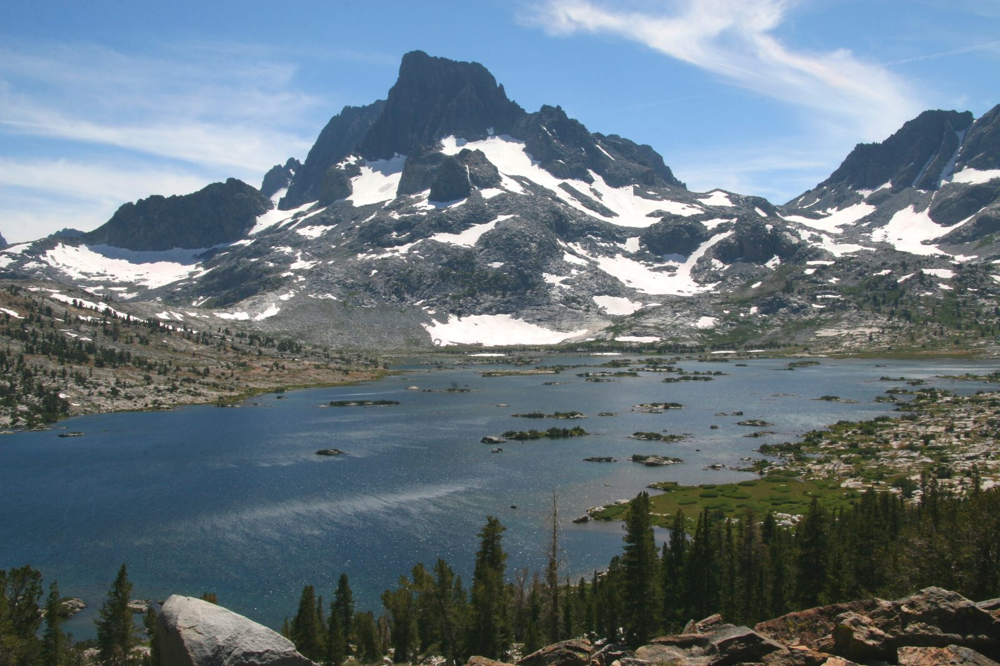
Photo: Dcrjsr (talk · contribs) · Wikipedia, CC BY 3.0 Thousand Island Lake
Banner Peak stands mirrored in still water studded with dozens of rocky islets — Thousand Island Lake, near 9,800 feet, where the Middle Fork of the San Joaquin begins. Ansel Adams photographed this basin; the wilderness around it carries his name. Wind ruffles the surface and the peak shivers and re-forms. Camping is restricted here to spare the fragile shore — few places on the trail match it.
-
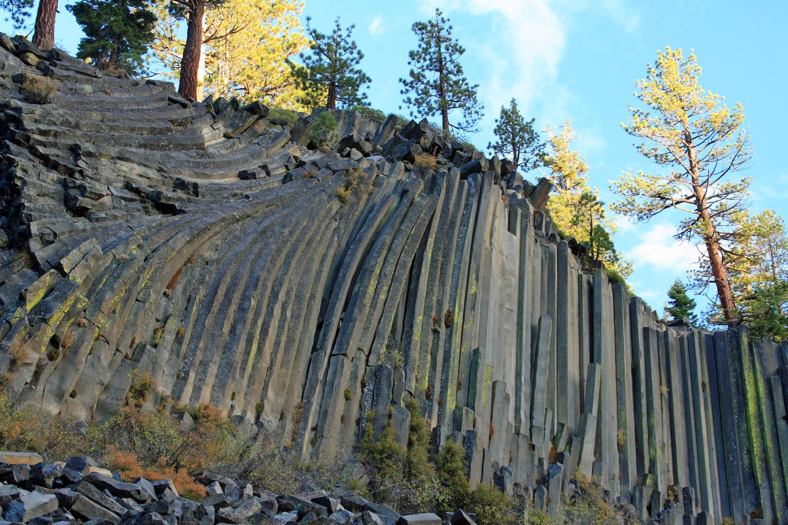
Photo: Frank Kovalchek from Anchorage, Alaska, USA · Wikipedia, CC BY 2.0 Devils Postpile
Columns of gray basalt rise in a leaning wall, hexagonal and close-packed like a bundle of organ pipes — Devils Postpile, cooled from a lava flow and later scraped smooth by glaciers. President Taft made it a national monument in 1911. Up top the ice left the column ends polished like a tiled floor. Reds Meadow and a hot spring lie just beyond, another chance to resupply.
-
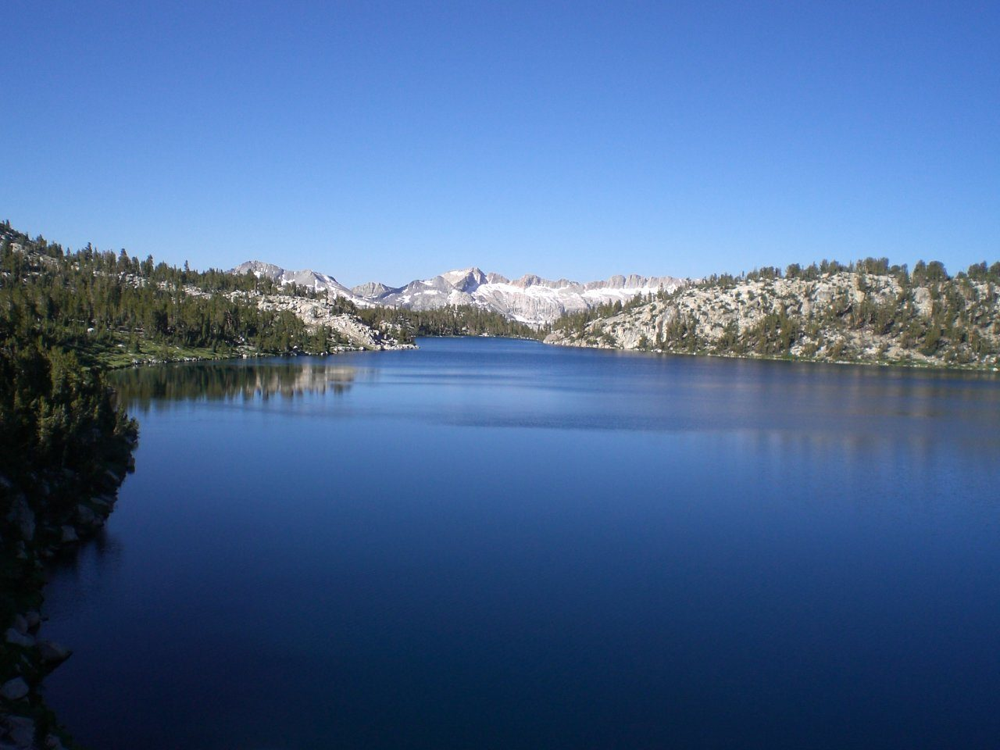
Photo: Leif · Wikimedia Commons, CC BY 2.0 Lake Virginia
Wide and pale under the afternoon light, Lake Virginia fills a high shelf above Tully Hole, ringed by meadow and bare rock. The long climb up from Duck Creek ends here, where the trail runs level along the shore. Trout dimple the shallows, and Cascade Valley drops away to the west. This is lonely country between resupplies, and the passes ahead only climb higher.
-
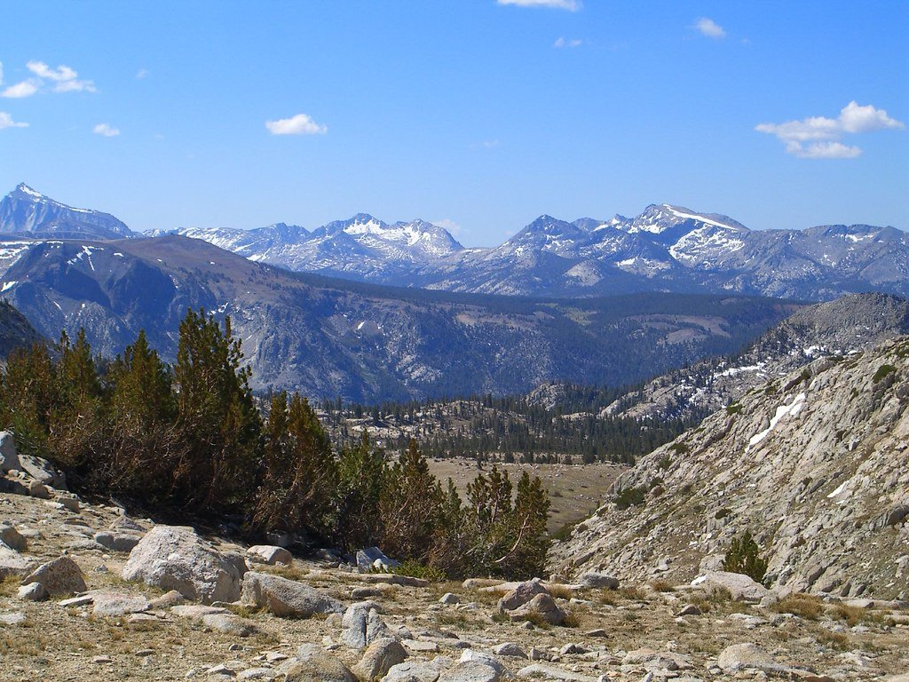
Photo: fredsharples · Flickr via Openverse, CC BY 2.0 Silver Pass
Pale granite gives way to darker, iron-stained rock where the trail tops Silver Pass, near 10,900 feet. Cold blue lakes lie strung on both sides of the Silver Divide, which parts Fish Creek's watershed from Mono Creek's. A cairn marks the high point, and the wind here never quite stops. Beyond, the country tips down toward the quiet meadows of Muir Trail Ranch.
-
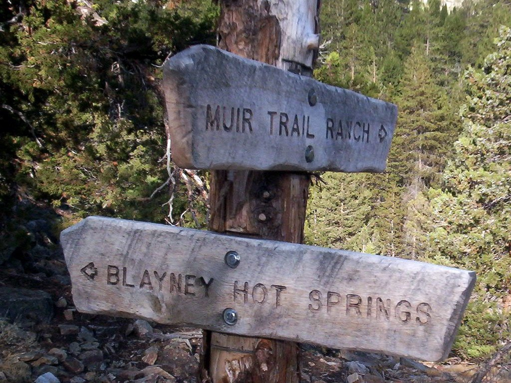
Photo: Rick McCharles · Flickr via Openverse, CC BY 2.0 Muir Trail Ranch
Hot springs bubble in a meadow beside the San Joaquin, and a working ranch keeps the trail's loneliest midpoint — Muir Trail Ranch, near 7,600 feet, the last resupply for a hundred miles. Hikers mail buckets here months ahead and repack for the long high stretch south. Past this gate the trail climbs into the wildest country in the range and does not come back down.
-
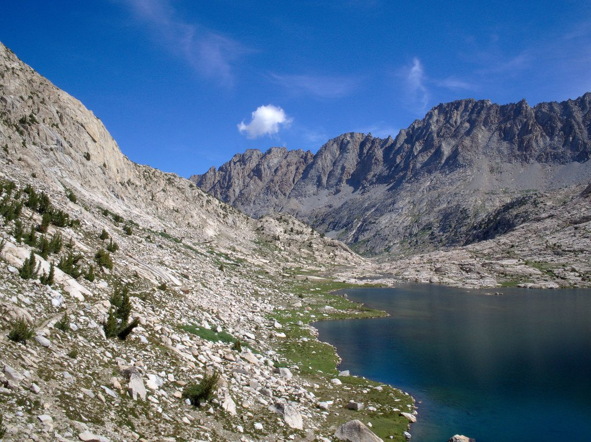
Photo: esrice · Flickr via Openverse, CC BY-SA 2.0 Evolution Basin
A chain of lakes steps up a bare granite stairway toward the crest, walled by peaks that carry the names Darwin, Huxley, and Wallace — Evolution Basin, a treeless amphitheater under thirteen-thousand-foot summits. Theodore Solomons named those peaks in 1895 for the men who reshaped how we see life. Nothing grows but sedge and lichen; the water lies like glass, the silence total. This is the roof of the trail's northern half.
-
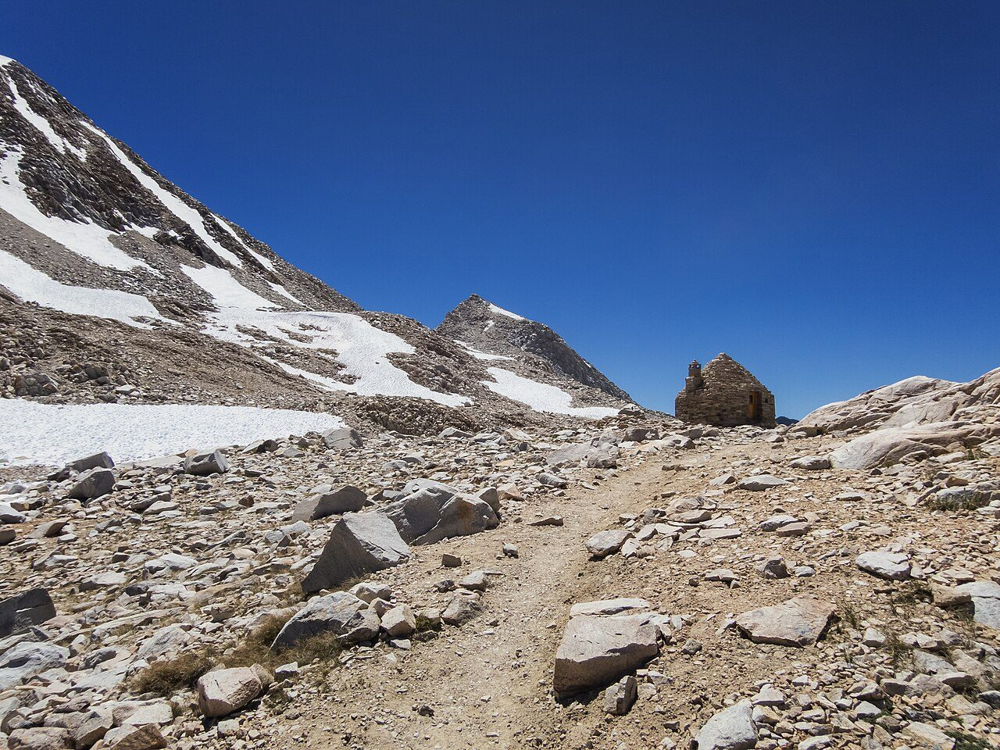
Photo: trailkrum · Wikimedia Commons, CC BY-SA 2.0 Muir Pass
A round stone hut crowns the saddle at Muir Pass, 11,955 feet, built by the Sierra Club in 1930 as shelter from the storms that rake this exposed rock. Snow lingers here into August, and the hut's inner walls are dark with the smoke of hikers caught out by weather. Named for Muir himself, the pass stands high between Evolution Basin and LeConte Canyon.
-
The Golden Staircase
Cut into a sheer cliff in tight, blasted switchbacks, the Golden Staircase was the last stretch of the John Muir Trail to be built, finished in 1938. It climbs out of Palisade Creek toward the lakes below Mather Pass over loose rock and long drops. For years no crew could find a workable line up this wall, and this one was the answer that finally opened the route.
-
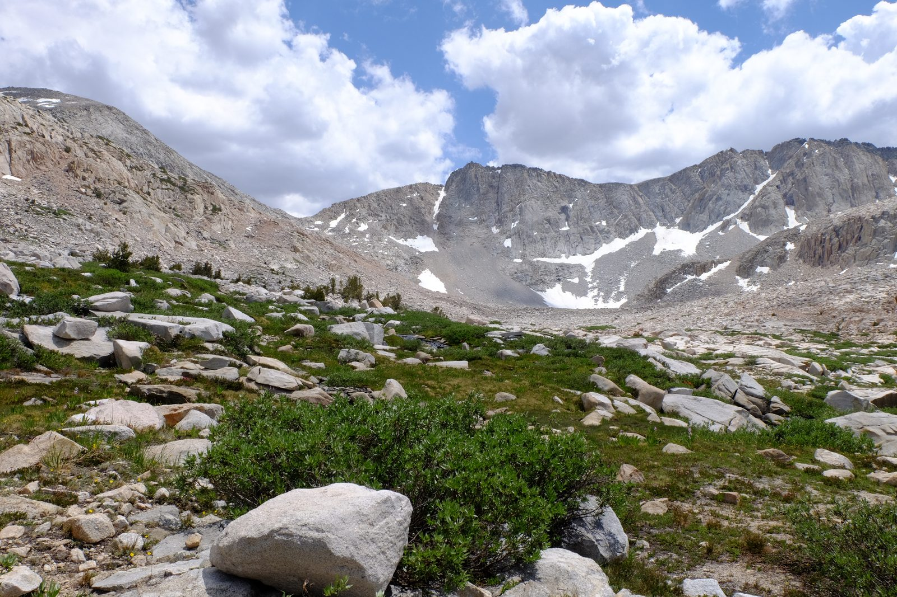
Photo: David Bakken · Wikipedia, CC BY-SA 2.0 Mather Pass
Ahead the trail threads a notch in a jagged granite wall — Mather Pass, 12,100 feet, named for Stephen Mather, the first director of the National Park Service. The Palisades bristle to the east, some of the sharpest peaks in the range. The climb is steep and the air thin. On the far side the Kings River country opens, terrace on terrace of stone.
-
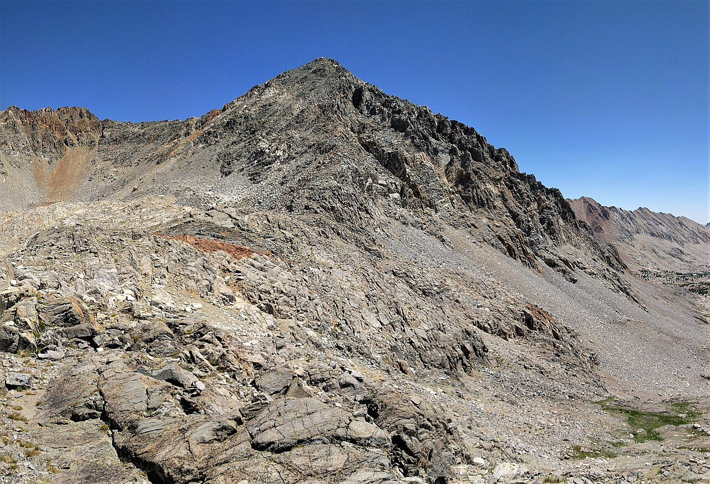
Photo: Tyler Bell · Wikimedia Commons, CC BY 2.0 Pinchot Pass
Red and gray rock tumbles away on both sides at Pinchot Pass, 12,130 feet, named for Gifford Pinchot, the forester who sparred with Muir over how wild land should be used. Marmots sun themselves on the talus. Here the trail rides the very spine of the Sierra, drainage to drainage, with Lake Marjorie glinting below on the northern side. The highest pass of all still lies ahead.
-
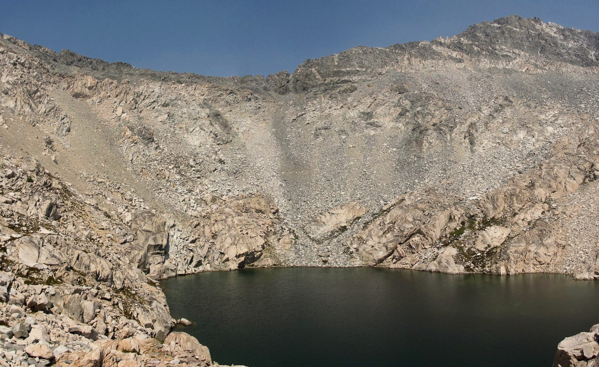
Photo: Miguel Vieira from Walnut Creek, CA, USA · Wikipedia, CC BY 2.0 Glen Pass
Narrow and knife-edged, Glen Pass tops out at 11,978 feet on a spine of shattered rock with barely room to stand. To the north, the Rae Lakes lie blue and stepped down the valley in a chain. The descent is all loose talus and switchbacks, and clouds build most afternoons over this ground. Deep in Kings Canyon National Park now, the route has one great pass left.
-
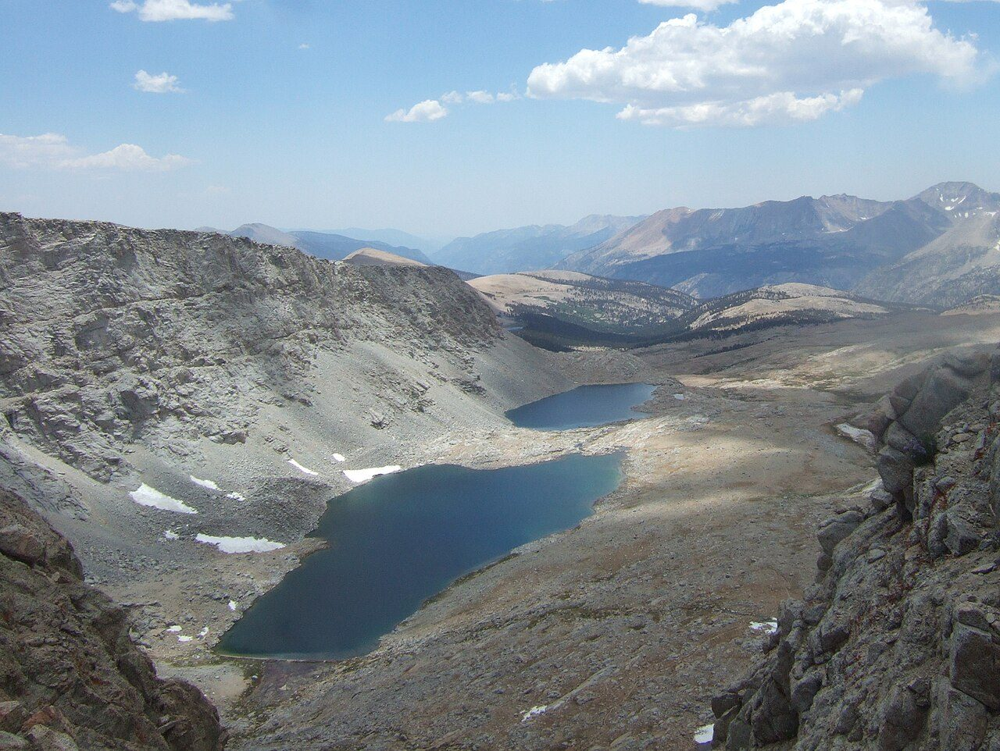
Photo: wetwebwork from london, U.K · Wikimedia Commons, CC BY-SA 2.0 Forester Pass
At 13,153 feet, Forester Pass is the highest point on the Pacific Crest Trail, a slot blasted through a near-vertical rib of the Kings-Kern Divide. The crew who cut it in the early 1930s worked roped over the drop. Snow can block the notch well into summer. Beyond it lies Sequoia National Park, with only Whitney standing higher between here and the finish.
-
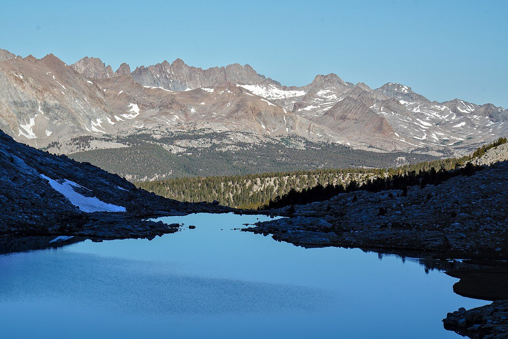
Photo: Martin Bravenboer · Wikimedia Commons, CC BY 4.0 Guitar Lake
Shaped like its namesake, Guitar Lake sits at around 11,500 feet in a bare granite bowl below the western flank of Mount Whitney. This is the last camp and the last reliable water, so hikers turn in early and wake in the dark to climb by headlamp. The peak's shadow falls long across the basin at dusk. Tomorrow, the highest ground in the Lower 48.
-
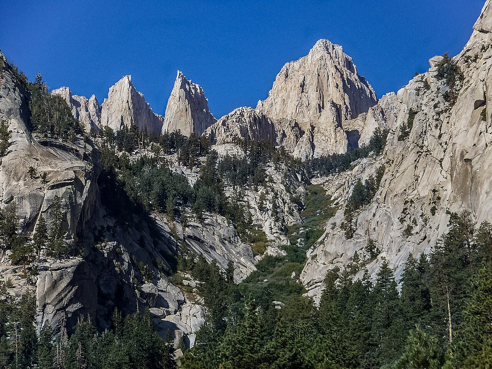
Photo: Cullen328 · Wikimedia Commons, CC BY 3.0 Mount Whitney
Fourteen thousand five hundred and five feet: the stone hut on the summit marks the end of the climbing. Mount Whitney is the highest point in the contiguous United States and the southern end of the John Muir Trail. The Sierra falls away on every side, and to the east the land drops two vertical miles to Owens Valley. Two hundred and eleven miles of granite and thin air lead to this point, with nothing higher left to walk to.
Walking the John Muir Trail
Your watch is already counting these steps. Watch Walks spends them on the John Muir Trail, all 340 km of it, and hands you each landmark as you reach it. There's no route recording, no account and no ads. The Inca Trail is free; this one is a one-time purchase with no subscription.
Other trails in North America
- Appalachian Trail 3,536 km · USA
- Pacific Crest Trail 4,265 km · USA
- Route 66 3,940 km · USA
- Wonderland Trail 150 km · USA (Washington)
- The Long Trail 439 km · USA (Vermont)
- Tahoe Rim Trail 265 km · USA (California/Nevada)